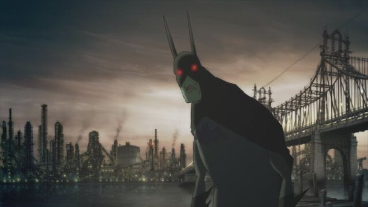

Let's set the stage a bit: Japan is no stranger to anthologies of experimental animated shorts. When "The Matrix" was a hit and proudly referenced anime as inspiration, the 2003 USA-comissioned anthology "The Animatrix" was produced. Critically, it was a success, and landed just as anime was becoming mainstream. Jump to 2008, and Warner Bros is looking to boost marketing for Christopher Nolan's live-action superhero flick "The Dark Knight." Their animation division was also kickstarting a series of direct-to-DVD animated DC movies. With this in mind, it seemed a smart business decision to repeat what the "Animatrix" did, with Batman, again giving Japanese studios a chance to shine.And it worked. 2008's "Batman - Gotham Knight" released on DVD just in time for "The Dark Knight's" theatrical release. The success would be repeated for other anime-inspired animated anthologies for popular properties - a decade later, the tradition continues with "Star Wars." For other DC animation, Batman quickly became the most popular and most frequently used hero. And by and large, those straight-to-DVD DC movies look terrible, a far cry from the 90's animated series, as if Warner Bros. outsourced them for a five-figure budget. It's no exaggeration that "Gotham Knight" is by far the most beautiful Batman has ever looked in 2D animation. And against all odds, the shorts are each distinct and compelling, enough so to proudly sit next to "The Animatrix" on your shelf. There are six shorts in total in the movie, separated by clear breaks and titles. Officially, it's meant to take place between the live-action "Batman Begins" and "The Dark Knight," giving a chance to see B-class villians that didn't make it into the main movies. Most of the shorts are standalone, although some of the later shorts have a throughline in their plot, and the same actors (namely, Kevin Conroy as Batman) are used for consistency, in place of the wildly different visuals and animation styles. The first, "Have I Got a Story For You" (Studio 4C) is the most unique and memorable. Using 4C's "Tekkonkinkreet" style, the design will be divisive, but it works for the tale of four kids at a skate park bragging about their encounter with "The Batman" earlier that day. The myth overshadows their perceptions, and they can't agree on whether they saw a moving shadow, a vampire, or a robot (this is in broad daylight, and based on how to kids talked, something recreational might have altered their vision). "Crossfire" (Production I.G.) comes next, showing the perspective of two cops under Lieutenant Gordon, arguing about Batman's morality as they drive an inmate to Arkham. The production values are at their weakest here, with a lot of limited animation, but it benefits from stylized depictions of the mob leaders.  "Field Test" (Bee Train) is a clever idea featuring Bruce Wayne and Lucius Fox, testing a new bullet-proof invention, whose consequences test Batman's morals. At this point, we see Batman's perspective, but seeing his cool counterpart in Bruce makes me wish for a full anime series for the hero. "In Darkness Dwells" (Madhouse) is possibly the least memorable, where Batman explores the sewers to save a victim from Scarecrow and Killer Croc. Madhouse still delivers some of the best style in the anthology though, and there's a memorable exchange between Batman and a homeless man living below. "Working Through Pain" (Studio 4C) uses a more traditional style compared to the first short, watching a wounded Batman desparately find his way out of the sewers to the aid of Alfred. Flashbacks show how Bruce trained overseas to overcome the sense of pain, and the short has the most poigniant ending of the set. Finally, "Deadshot" (Madhouse) is the most traditional story, and perhaps the most beautifully stylized and animated (Madhouse was one of the hottest studios at the time, for good reason). As it sounds, it focuses on the skilled sniper Deadshot and his latest job in Gotham City, resulting in a thrilling faceoff on a moving train with Batman. It's an exciting cap to the movie package, although at barely over an hour total, the film could have used one or two more.Since this is basically anime, the tone and violence is a little more brutal than standard DC movies (it wouldn't be until years later that DC was willing to make an R-rated animated Batman film). Even so, it's not above what a ten-year-old might tolerate. I think a younger audience would be confused with the six wildly different-looking Batmen (each with distinct suits, no less), but for adult viewers, it's remarkably refreshing. Even if you don't particularly like anime, the stories themselves are better written than most comics on the hero, with the benefit of a short plot that needs to end in 12 minutes. There's a lot of personal bias here. I like anime, but I like 2D animation of all types - the DC-animated-DVD catalog is one of the very few who output consistently mediocre technical quality. "Batman - Gotham Knight" surpasses all of that across the board, in visuals, animation, audio and story. It's an accessible form of experimental animation, and a gateway bridge for future lovers of comics, animation, anime, and short films.
- "Ani" More reviews can be found at : https://2danicritic.github.io/ Previous review: review_Batman_-_80th_Anniversary_-_18-Film_Collection Next review: review_Batman_-_The_Long_Halloween